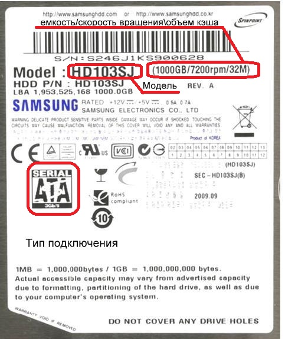

Маркировка на накопителях, таких как жесткие диски (HDD), твердотельные накопители (SSD) или флеш-накопители, также содержит важную информацию о характеристиках устройства.

Вот общие принципы расшифровки маркировки накопителей:
производитель:
примеры производителей накопителей: Seagate, WesternDigital, Samsung, Crucial, Kingston и др.
модель:
конкретная модель накопителя, например, SeagateBarracuda, Samsung 970 EVO, Kingston A2000.